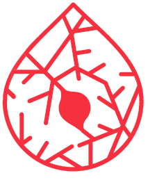
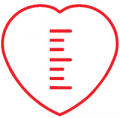
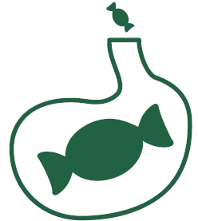
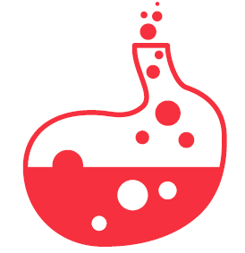

M01-PRODUTOS ANTIINFLAMATÓRIOS E ANTIRREUMÁTICOSCategoria: M-SISTEMA
MÚSCULO-ESQUELÉTICO
Exemplo: Ibuprofeno
Detalhes

B01-AGENTES ANTITROMBÓTICOSCategoria: B-SANGUE E ÓRGÃOS
B01-AGENTES ANTITROMBÓTICOSCategoria: B-SANGUE E ÓRGÃOS
FORMADORES DE SANGUE
Exemplo: Clopidogrel
Detalhes

C09- ANTI-HIPERTENSIVOS Categoria: C-SISTEMA
C09- ANTI-HIPERTENSIVOS Categoria: C-SISTEMA
CARDIOVASCULAR
Exemplo: Losartan + hidroclorotiazida
Detalhes

A10-MEDICAMENTOS USADOS NO DIABETESCategoria: A-METABOLISMO
A10-MEDICAMENTOS USADOS NO DIABETESCategoria: A-METABOLISMO
E TRATO ALIMENTAR
Exemplo: Metformina
Detalhes

A02-MEDICAMENTOS PARA TRANSTORNOS RELACIONADOS A ÁCIDOSCategoria: A-METABOLISMO
A02-MEDICAMENTOS PARA TRANSTORNOS RELACIONADOS A ÁCIDOSCategoria: A-METABOLISMO
E TRATO ALIMENTAR
Exemplo: Pantoprazol
Detalhes
Carrinho
Agora mesmo
O produto Disco SSD Externo SANDISK Portable E30 (1 TB - USB-C 3.2 Gen 1 (3.1 Gen 1)) foi adicionado ao carrinho.